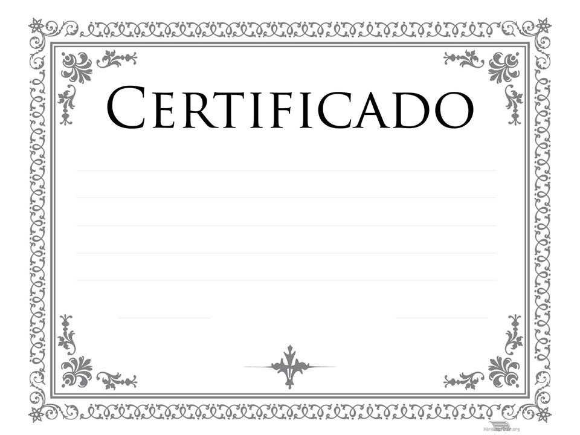
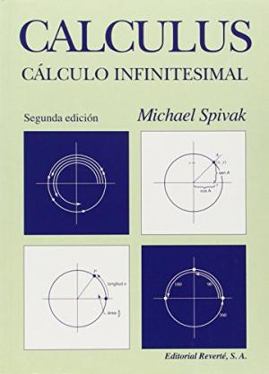
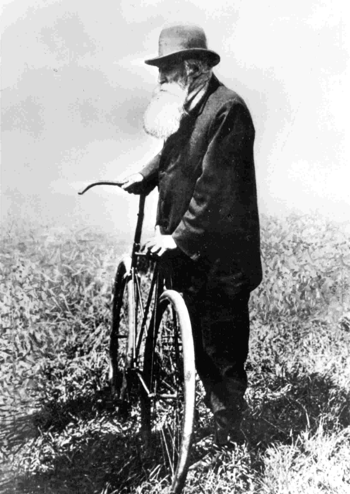

class: center, middle, inverse # Cómo desarrollar una carrera profesional usando los conceptos del software libre Víctor Olaya (Boundless) --- class: center, middle # Resumen: Participando en un proyecto de software libre --- class: center, middle --- class: center, middle <img src="./justin.jpg" width="100%"/>. --- class: center, middle # "open", "free", etc ≠ altruismo --- class: center, middle # Comunidad # Transparencia # Público --- class: center, middle # ¿CV? --- class: center, middle # ¡Portfolio! --- class: center, middle . --- class: center, middle # Portfolio social --- .left-column[ ## Programadores ] .right-column[ - Publica tu código. - Contribuye a un proyecto enviando patches y PRs. - Escribe. - Usa una plataforma tipo GitHub/Bitbucket. - Participa en foros y listas de correo (StackOverflow). ] --- .left-column[ ## Analistas y cartógrafos ] .right-column[ - Escribe sobre los métodos y el software que usas. - Publica tus mapas. - Participa en foros y listas de correo, preguntando dudas o ayudando a otros. Muestra lo que sabes, y también lo que no sabes. - Únete a un grupo local (geoinquietos), presenta tu trabajo y comparte después online tus presentaciones. ] --- .left-column[ ## Otros ] .right-column[ - Escribe un blog sobre SIG - Escribe documentación de un software SIG - Traduce documentación de un software SIG - Graba podcasts/screencasts - Participa en proyectos abiertos (OSM, etc.) ] --- class: center, middle # Consejo 1: # No tengas miedo ni vergüenza. --- class: center, middle # Consejo 2: # La innovación está sobrevalorada --- class: center, middle . --- class: center, middle # No reinventes la rueda, pero intenta redefinirla --- class: center, middle . --- class: center, middle, inverse # ¡Gracias! ## Víctor Olaya ## volaya@boundlessgeo.com